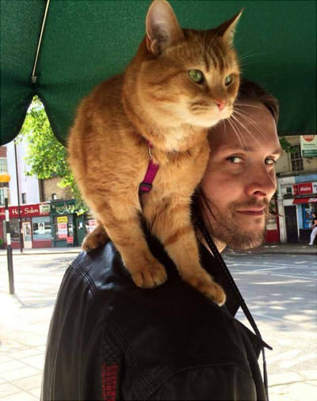
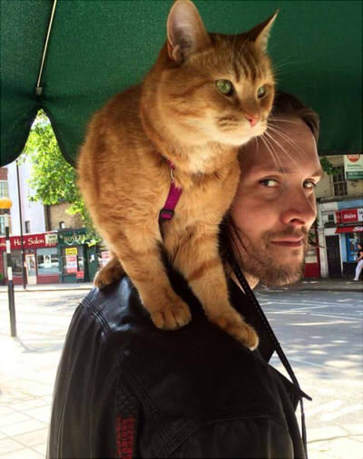
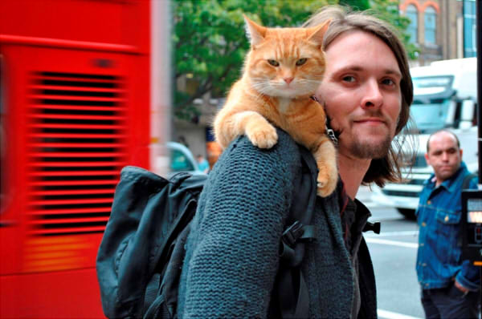
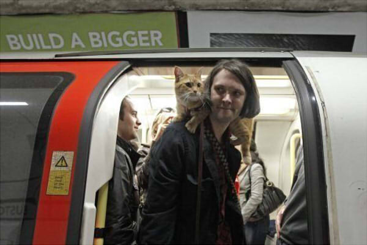
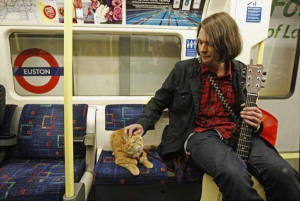

Уличный кот по имени Боб
Джеймс Боуэн, бездомный уличный музыкант, однажды помог рыжему бродячему коту, и с тех пор они неразлучны. В Лондоне в одном из книжных магазинах музыкант Джеймс Боуэн и его кот по кличке Боб 13 Марта 2012-го года представили книгу - "Уличный кот по имени Боб: как человек и кот нашли надежду на улицах города". Джеймс Боуэн описал в своей книге, как встреча с Бобом изменила его жизнь.
Началось все с того, что Джеймс обратил внимание на свернувшегося калачиком бездомного котяру, который явно страдал от боли. Выяснилось, что незадолго до того он вступил в схватку с другим котом, и тот поранил ему лапу: при ходьбе Боб сильно прихрамывал, ранка гноилась, наблюдался явный абсцесс. Может, кто другой прошел бы мимо, но не Боуэн, который и сам был бомжом. И знал, каково это - оказаться без помощи и надежды на спасение. Музыкант отнес животное к ветеринару, ему прописали курс антибиотиков, и вскоре Боб перестал хромать. Джеймс вздохнул с облегчением, распрощался со своим питомцем и решил, что они больше никогда не увидятся. Но все обернулось иначе. Благодарный Боб настолько привязался к своему спасителю, что начал следовать за ним буквально по пятам. На деньги, вырученные от игры на улице, а также от продажи благотворительных журналов, Джеймс Боуэн покупает своему рыжему другу кошачий корм - Боб, кстати, предпочитает консервы. Надо заметить, что с появлением кота доходы его старшего друга значительно возросли: ведь трудно пройти мимо такой колоритной парочки! Особенно если учесть, что пушистый модник любить щеголять в шарфах ручной вязки. "Когда я впервые увидел этого кота, я даже и предположить не мог, насколько он изменит мою жизнь", - признается музыкант в предисловии к книге. А дальше следует описание их забавных, а порой и опасных приключений. И признание в том, что их общение помогло заживлению старых шрамов - ведь и у одного, и у другого была нелегкая жизнь... Между прочим, лондонская транспортная компания подарила Джеймсу с Бобом смарт-карты Oyster - проездные билеты в общественном транспорте. И человеку, и коту. Что совсем не случайно: ведь Боуэн впервые познакомился с котом именно на станции метро - под символичным названием Angel.
Боба и Джеймса можно найти в Instagram, в Facebook, в, Twitter, на YouTube
  